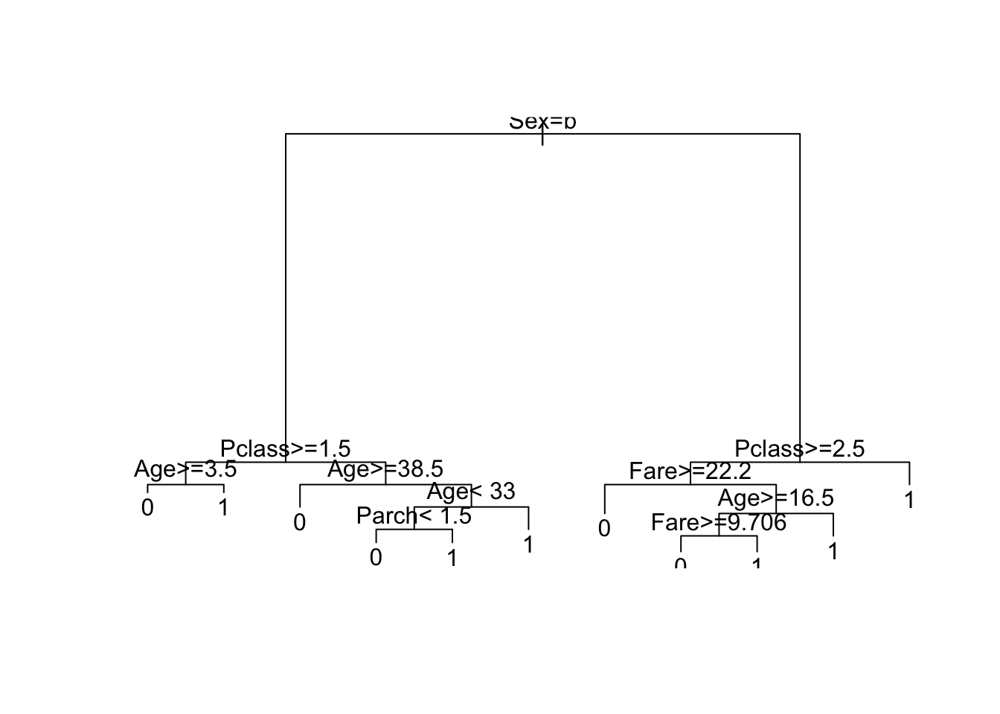
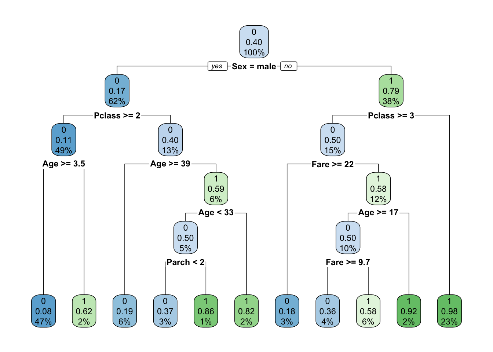

The sinking of the RMS Titanic is one of the most infamous shipwrecks in history. On April 15, 1912, during her maiden voyage, the Titanic sank after colliding with an iceberg, killing 1502 out of 2224 passengers and crew. This sensational tragedy shocked the international community and led to better safety regulations for ships. One of the reasons that the shipwreck led to such loss of life was that there were not enough lifeboats for the passengers and crew. Although there was some element of luck involved in surviving the sinking, some groups of people were more likely to survive than others, such as women, children, and the upperclass. Here we analyze what sorts of people were likely to survive.
First, Read the titanic.csv data.
titanicData <- read.csv("/Users/Shima/Desktop/R_projects/titanic_survivors/titanic.csv", header = TRUE)
head(titanicData)## PassengerId Survived Pclass
## 1 1 0 3
## 2 2 1 1
## 3 3 1 3
## 4 4 1 1
## 5 5 0 3
## 6 6 0 3
## Name Sex Age SibSp
## 1 Braund, Mr. Owen Harris male 22 1
## 2 Cumings, Mrs. John Bradley (Florence Briggs Thayer) female 38 1
## 3 Heikkinen, Miss. Laina female 26 0
## 4 Futrelle, Mrs. Jacques Heath (Lily May Peel) female 35 1
## 5 Allen, Mr. William Henry male 35 0
## 6 Moran, Mr. James male NA 0
## Parch Ticket Fare Cabin Embarked
## 1 0 A/5 21171 7.2500 S
## 2 0 PC 17599 71.2833 C85 C
## 3 0 STON/O2. 3101282 7.9250 S
## 4 0 113803 53.1000 C123 S
## 5 0 373450 8.0500 S
## 6 0 330877 8.4583 Q# check data: count number of null rows
sum(!complete.cases(titanicData)) ## [1] 177# remove null rows
titanicData <- titanicData[complete.cases(titanicData), ]Display the names of the features in this data set.
names(titanicData)## [1] "PassengerId" "Survived" "Pclass" "Name" "Sex"
## [6] "Age" "SibSp" "Parch" "Ticket" "Fare"
## [11] "Cabin" "Embarked"Create a decision tree model to predict who would survive the titanic disaster.
# create testing / training datasets
num_samples = dim(titanicData)[1]
sampling.rate = 0.8
training<-sample(1:num_samples,sampling.rate*num_samples,replace = TRUE)
trainingset <- subset(titanicData[training,])
testing <- setdiff(1:num_samples,training)
testingset <- subset(titanicData[testing,])
# load library
library(rpart)
# create decision tree to predict survival - exclude unique identifiers variables: passenger name, ticket number and cabin number
decTreeModel <- rpart(Survived ~ Pclass + Sex + Age + SibSp + Parch + Fare + Embarked, data=trainingset, method="class")
plot(decTreeModel)
text(decTreeModel)
# use rpart's plot library to make tree more readable
library(rpart.plot)
rpart.plot(decTreeModel)
# make predictions using the testingset
prediction <- predict(decTreeModel, testingset, type = "class")
predictionResults <- data.frame(Survived = prediction)
head(predictionResults)## Survived
## 1 0
## 2 1
## 4 1
## 5 0
## 7 0
## 9 0# claculate misclassification rate
wrongPredictions = sum(prediction != testingset$Survived)
sizeOfTestSet = dim(testingset)[1]
misclassification = wrongPredictions / sizeOfTestSet
print(paste("Missclassification Rate: ", round(misclassification*100,2), "%"))## [1] "Missclassification Rate: 20.83 %"Our decision tree indicates that females with Pclass < 3 (so PClass 1 and 2) had the highest rate of survival (23%) for the training/testing dataset used. This rate will slightly vary evrytime a new training/testing set is used.
We can conclude that women and children were prioritized in the evacuation as they had significantly higher survival rates according to our data. More expensive PClasses were also prioritized (PClass 1 and 2) as females who were in lower PClasses had a higher chance of survival according to our decision tree.
library("ggplot2")
# create a new column names childOrAdult to calculate survival rates
titanicData$childOrAdult <- NA
numRows <- dim(titanicData)[1]
childTotal=0
childSurvived=0
adultTotal=0
adultSurvived=0
femaleTotal=0
femaleSurvived=0
maleTotal=0
maleSurvived=0
for(i in 1:numRows) {
age <- titanicData$Age[i]
sex <- titanicData$Sex[i]
if(sex=="female"){
femaleTotal <- femaleTotal+1
if(titanicData$Survived[i]==1) {
femaleSurvived <- femaleSurvived+1
}
}
if(sex=="male"){
maleTotal <- maleTotal+1
if(titanicData$Survived[i]==1) {
maleSurvived <- maleSurvived+1
}
}
if (age <= 10){
titanicData$childOrAdult[i] <- "Child"
childTotal <- childTotal+1
if(titanicData$Survived[i]==1) {
childSurvived <- childSurvived+1
}
}else {
titanicData$childOrAdult[i] <- "Adult"
adultTotal <- adultTotal+1
if(titanicData$Survived[i]==1) {
adultSurvived <- adultSurvived+1
}
}
}
titanicData$childOrAdult <- as.factor(titanicData$childOrAdult)
# compare survival rate for children vs adults
print(paste("Childern Survival Rate:",round((childSurvived/childTotal)*100,2), "%"))## [1] "Childern Survival Rate: 59.38 %"print(paste("Adult Survival Rate:",round((adultSurvived/adultTotal)*100,2), "%"))## [1] "Adult Survival Rate: 38.77 %"# visualize children vs adults
ggplot(titanicData, aes(fill = titanicData$childOrAdult, titanicData$Survived)) + geom_bar()+ guides(fill=guide_legend(title = NULL))+coord_flip() + labs(title = "Survival by Age", x = "Survived (0 or 1)", y = "Passengers")# compare survival rate for females vs males
print(paste("Female Survival Rate:",round((femaleSurvived/femaleTotal)*100,2), "%"))## [1] "Female Survival Rate: 75.48 %"print(paste("Male Survival Rate:",round((maleSurvived/maleTotal)*100,2), "%"))## [1] "Male Survival Rate: 20.53 %"# visualize females vs males
ggplot(titanicData, aes(fill = titanicData$Sex, titanicData$Survived)) + geom_bar()+ guides(fill=guide_legend(title = NULL))+coord_flip() + labs(title = "Survival by Gender", x = "Survived (0 or 1)", y = "Passengers")